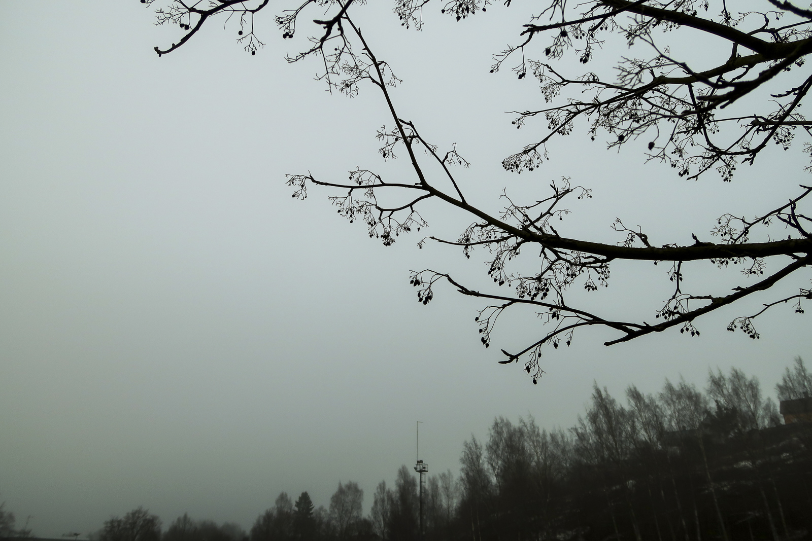

Chapter 3: Scary things...
=======Chapter 3: This is not a good idea
>>>>>>> 9370ebe246a0c359c740e809b461f477ee84915e Previous chapterOn street...

the houses have put Halloween decorations up and of them have lights on. All three kids walk close to each other and C is holding on to their pet. Earlier they were all and but now they are all
"Maybe we should turn back?" almost whispers. "It doesn't seem like we're gonna get a lot of here. Besides, I don't like the ."
"Yeah... And look, that looks like it's ", whispers back pointing at a on their left.
But before the others can respond, the leaves of the nearby hedge ruffle and .
" ", screams. As they back off from the hedge they knock over. What follows is seconds of utter chaos.
B is the first to recover. As soon as they do, they realise .
"Where is C's pet?", B says sounding nervous and looking around.
"There! On the porch!" cries out pointing at the house on their left. And sure enough, is standing at the porch seemingly curious about the house. The front door is slightly open, and before the trio manages to even call for them, and .
"Oh no....", whispers, their face turning white. "This is not good..."
"We have to go after , there's no other option", says trying to sound but looking just as nervous as . Scared they head towards the house...